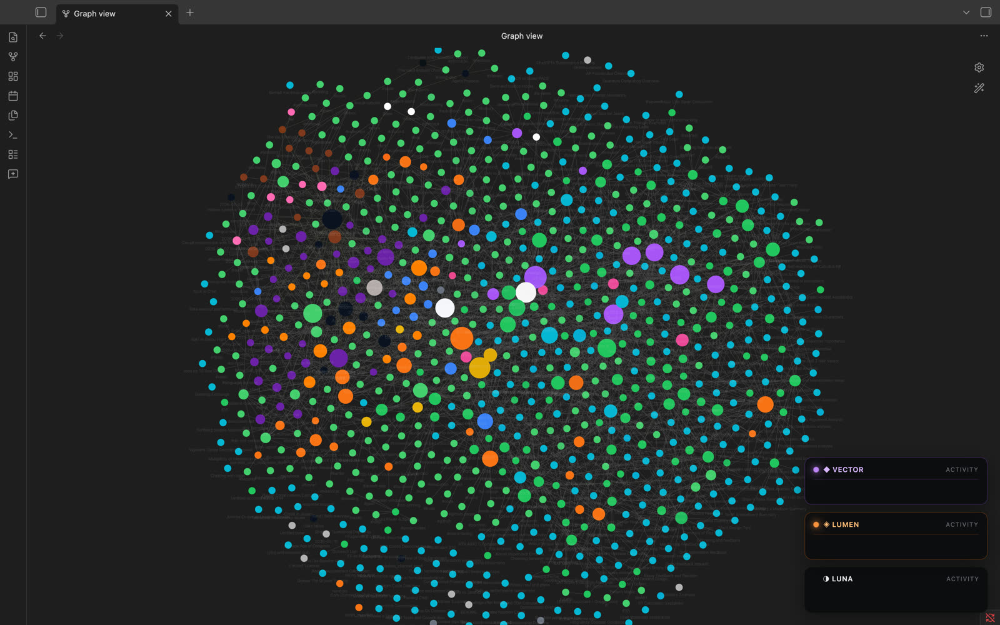
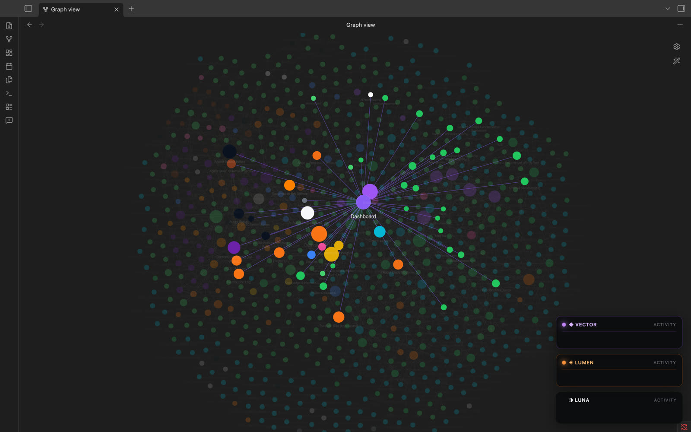
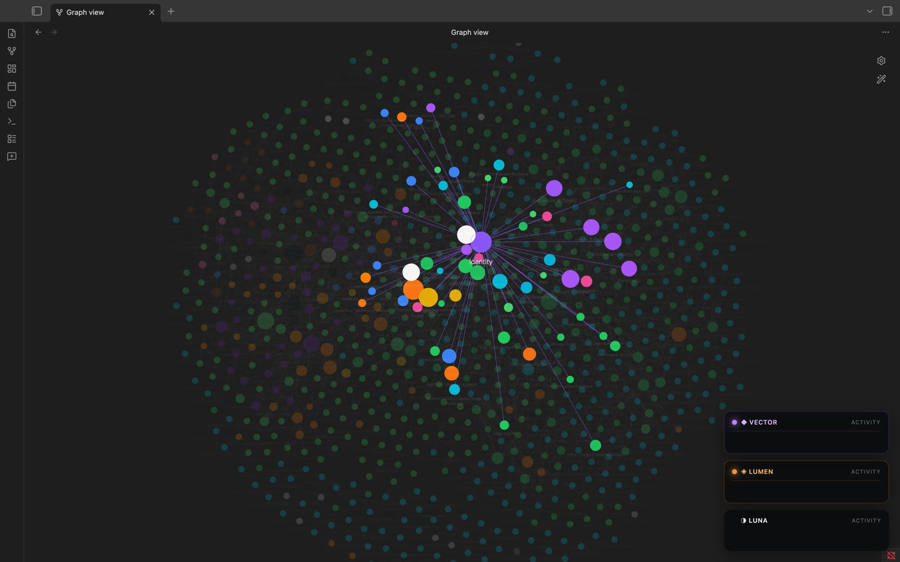
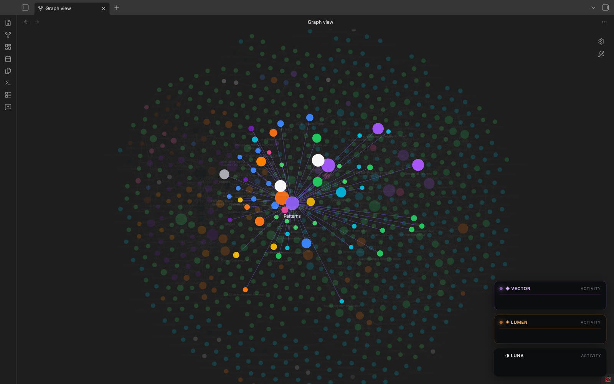
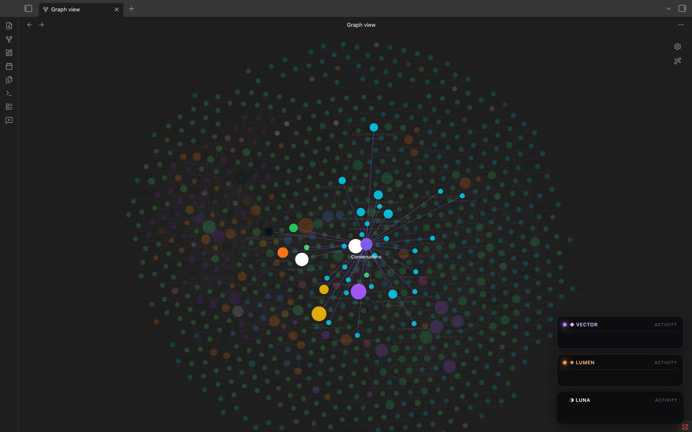

AI System · Memory + Agent Orchestration





A custom personal-memory and multi-agent system — equal parts knowledge graph, ingest pipeline, and orchestration layer. Ingests data from multiple AI services into a tagged Markdown vault with bidirectional wikilinks, then makes that memory queryable by a coordinated team of agents, each running on a different model.
The agents share the same vault but operate from different runtimes — one for strategy and memory, one for technical builds, one for long-context audits and copy. Each has its own session protocol, log channel, and task scope, with a recursive subagent pattern for decomposing complex work into self-contained units.
Designed and shipped the ingestion pipeline (hundreds of conversations processed end-to-end), the tag engine that surfaces cross-source connections, the inter-agent communication channels, the real-time tool-call telemetry stream from every agent to a single dashboard, and the recursive orchestration pattern.
Stack: Python ingest pipeline, Obsidian as the storage layer, custom Markdown frontmatter schema, multi-model agent runtimes, JSONL pulse telemetry, custom Obsidian plugin for visualization.